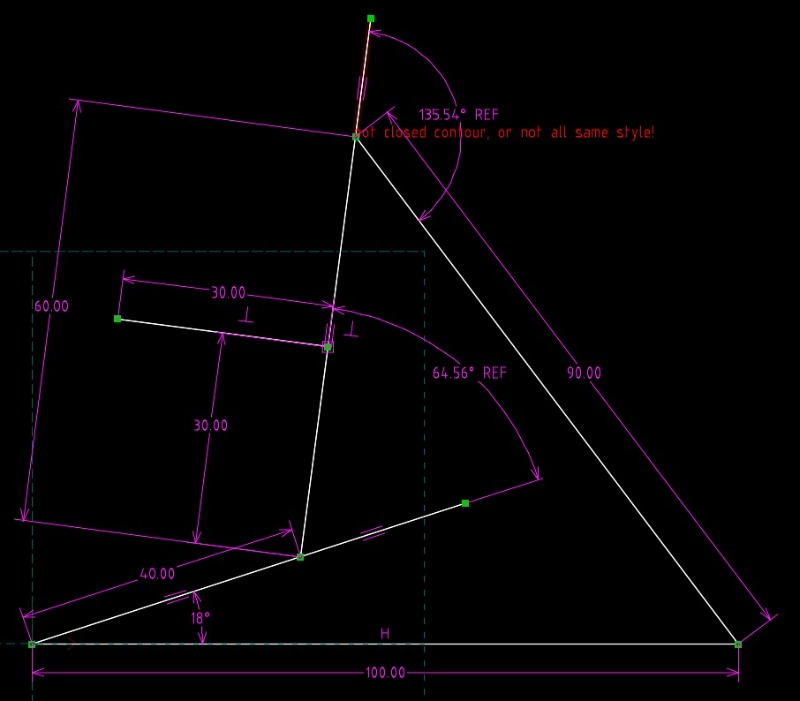

Exam <<
Previous Next >> Exam2
Exam1
Exam1 (10%)：建立 Webots 基本物件模擬場景
紅色連桿為主動旋轉，其旋轉速度設為1.0 rad/s，長度為0.4m。
起始角度18°
綠色基座長端為0.6m，短端長度為0.3m，基座短端位於長桿中央且與基座長桿重疊。
藍色連桿長度為0.9m，紅色連桿與藍色連桿距離則為1m。
- 加入Robot
- 在Robot下加入Solid命名為base。
- 在Solid下加入第一個HingeJoint節點，命名為joint1。
- joint1→endpoint選擇新增Solid節點，命名為link1。
- joint1→endpoint→translation(x,y,z)設定(-0.5,0,0.1)，此為轉軸的座標。
- joint1→endpoint→rotation(x,y,z,angle)設為(0,0,1,0.314)。
角度為學號後兩碼18°轉θ = 0.314 rad。
- joint1→endpoint→children新增第一個Pose命名為link1和新增第二個HingeJoint命名為joint2。
- joint1→endpoint→children→第一個Pose→children加入Shape作為link1。
- Shape下的geometry加入box作為link1，size為(0.4,0.1,0.1)。
- joint1→endpoint→children→第一個Pose→translation設為link1長度的一半(0.2,0,0)。
- joint1→endpoint→children新增第二個Hingejoint命名為joint2，endpoint新增Solid命名為link2。
- joint2→endpoint→translation設(0.4,0,0.1)，此為轉軸2的座標，z軸提高0.1m以防止模型穿模。
- joint2→endpoint→rotation設為(0,0,1,1.12)，64.56°轉θ = 1.12 rad。
- joint2→endpoint→children
新增第三個Hingejoint命名為joint3，
新增第二個Pose命名為link2-1，
新增第三個Pose命名為link2-2。
- 第二個Pose(link2-1)→children→Shape→geometry加入box作為link2-1，size為(0.6,0.1,0.1)。
- 第二個Pose(link2-1)→translation設為link2-1長度的一半(0.3,0,0)。
- 第三個Pose(link2-2)→children→Shape→geometry加入box作為link2-2，size為(0.1,0.3,0.1)。
- 第三個Pose(link2-2)→translation設為link2-2長度的一半(0.3,0.15,0)。
- joint1→endpoint→children→joint2→endpoint→children→joint3新增Solid命名為link3。
- joint3→endpoint→translation設(0.6,0,-0.1)，此為轉軸3的座標，z軸降低0.1m與base相接。
- rotation設為(0,0,-1,2.37)。z軸為負且135.54°轉θ = 2.37 rad。
- joint3→endpoint→children
新增第四個Hingejoint命名為joint4，
新增第四個Pose命名為link3。
- joint4→endpoint新增SolidReference，solidName選擇預設值<static environment>。
- 補上在endpoint下所有的boundingObject，設為Pose，並在下方的children加上box，Pose座標為以上所有方塊所屬的Pose的座標。
- 每一階的HingeJoint下的jointparameters，每一階的axis旋轉方向都是z軸，因此設為(0,0,1)，並更改每一階的anchor：
joint1的為(-0.5,0,0)
joint2的為(0.4,0,0)
joint3的為(0.6,0,0)
joint4的為(0.9,0,0)。
- link1、link2-1、link2-2、link3要加入物理碰撞physics使用預設值，由Webots自行運算即可。
- 加入controller選擇檔案。
- 存檔後時間歸零確認無誤，即可模擬。

操作影片標題：國立虎尾科技大學 - 機械設計工程系 - cd2025 Exam1 - 41023218
心得：
做到link2的時候，一開始腦袋轉不過來，抱著嘗試2個Pose的態度，嘗試過後成功了。
Exam <<
Previous Next >> Exam2